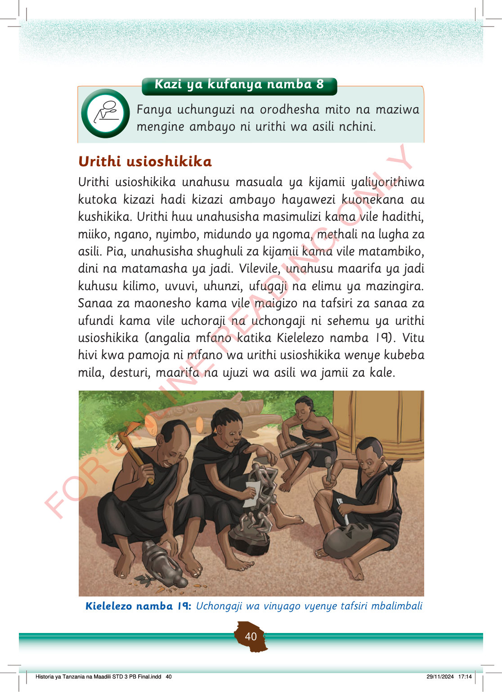

Kazi ya kufanya namba 8
Fanya uchunguzi na orodhesha mito na maziwa mengine ambayo ni urithi wa asili nchini.
Urithi usioshikika
Urithi usioshikika unahusu masuala ya kijamii yaliyorithiwa kutoka kizazi hadi kizazi ambayo hayawezi kuonekana au kushikika.
Urithi huu unahusisha masimulizi kama vile hadithi, miiko, ngano, nyimbo, midundo ya ngoma, methali na lugha za asili.
Pia, unahusisha shughuli za kijamii kama vile matambiko, dini na matamasha ya jadi.
Vilevile, unahusu maarifa ya jadi kuhusu kilimo, uvuvi, uhunzi, ufugaji na elimu ya mazingira.
Sanaa za maonesho kama vile maigizo na tafsiri za sanaa za ufundi kama vile uchoraji na uchongaji ni sehemu ya urithi usioshikika (angalia mfano katika Kielelezo namba 19).
Vitu hivi kwa pamoja ni mfano wa urithi usioshikika wenye kubeba mila, desturi, maarifa na ujuzi wa asili wa jamii za kale.
Watu wanne wanachonga vinyago kwa kutumia zana za mikono. Wanaonyesha ujuzi wa jadi wa sanaa na ufundi.
Kielelezo namba 19: Uchongaji wa vinyago vyenye tafsiri mbalimbali
Historia ya Tanzania na Maadili STD 3 PB Final.indd 40
29/11/2024 17:14